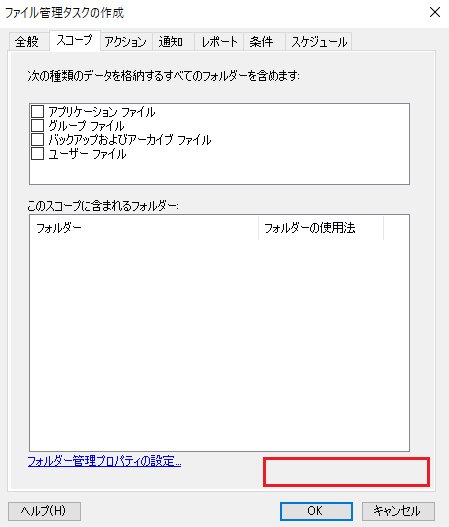
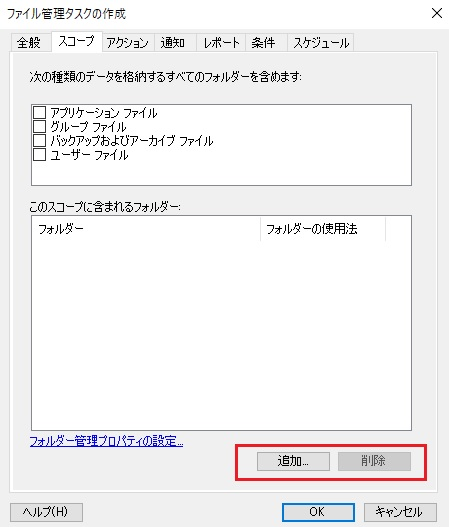
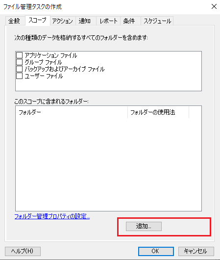
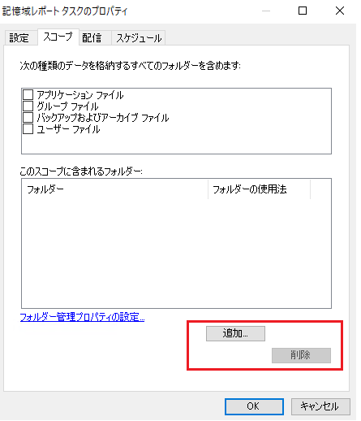

本記事は、マイクロソフト社員によって公開されております。
こんにちは、Windows サポートチームの三浦です。
本日は Windows Server 2022 で確認されている、FSRM のファイル管理タスクのスコープ画面から [追加] および [削除] ボタンが消える事象について紹介させていただきます。
概要
表示言語を日本語、中国語、韓国語 のいずれかに設定している Windows Server 2022 で、ファイル管理タスクのスコープ画面を開くと [削除] ボタン、もしくは、[追加] と [削除] ボタンの両方のボタンが消えており、スコープに含まれるフォルダーの追加や変更を行うことができない問題が発生する場合がございます。

※ 本来は下記のように [追加] および [削除] ボタンが表示されます。

対象 OS
表示言語を日本語、中国語、韓国語のいずれかに設定している Windows Server 2022 で発生いたします。
原因
現在、弊社では本問題の原因を調査中であり、修正に向けて対応を進めております。
回避策
誠に恐れ入りますが、ファイル管理タスクのスコープに含まれるフォルダーの変更が必要な場合には、PowerShell コマンドにて設定、および、変更をご実施いただきますようお願い申し上げます。
また、新規でファイル管理タスクを作成される場合は、スコープ フォルダーを指定せずにタスクを作成後、PowerShell コマンドにてスコープ フォルダーを追加いただくか、タスクの作成自体を PowerShell コマンドにてご実施いただけますと幸いでございます。
PowerShell コマンドによるスコープの設定手順
- 管理者権限の PowerShell を起動します。
- Set-FsrmFileManagementJob コマンドを利用して、スコープに含まれるフォルダーの設定を行います。 ※ スコープに含まれるフォルダーは、-Namespace で指定したフォルダーに置き換えられます。
1
Set-FsrmFileManagementJob -name "<Task Name>" -Namespace @("<Scope Path>")
例えば、既に “C:\Share01” をスコープに指定しており、さらに、”C:\Share02” を追加したい場合は、下記のように、両フォルダーを -Namespace に指定します。1
Set-FsrmFileManagementJob -name "Expire data" -Namespace @("C:\Share01","C:\Share02")
PowerShell コマンドによるファイル管理タスクの作成手順例
- 管理者権限の PowerShell を起動します。
- タスクの実行スケジュールを New-FsrmScheduledTask で定義し、変数に格納します。※ 上記例では、月曜、および、火曜の 12:00 にタスクを実行するよう定義しております。
1
2$date = Get-Date "12:00am"
$task = New-FsrmScheduledTask -Time $date -Weekly @(1,2)
※ -Weekly で指定する値が対応している曜日は下記となります。
0—-> 日曜
1—-> 月曜
2—-> 火曜
3—-> 水曜
4—-> 木曜
5—-> 金曜
6—-> 土曜
タスクのアクションを New-FsrmFmjAction で定義し、変数に格納します。
1
$action = New-FsrmFmjAction -Type Expiration -ExpirationFolder "C:\Expire"
※ 上記例では、有効期限切れのファイルを “C:\Expire” へ移動するよう定義しております。
New-FsrmFileManagementJob コマンドを利用してファイル管理タスクの作成を行います。
1
New-FsrmFileManagementJob -Name "Expire data" -Namespace @("C:\Share") -Schedule $task -Action $action
※ -Namespace でスコープに含めるフォルダーをご指定ください。
各コマンドで利用可能なオプションに関しては、下記の弊社公開情報をご参照ください。
補足情報
KB5005575 以降の更新プログラムが適用されていない環境では、下記のように、[削除] ボタンのみが消える事象が発生いたします。

また、同様に、KB5005575 以降の更新プログラムが適用されていない環境では、記憶域レポート タスクのスコープ画面において、下記のように、[削除] ボタンのレイアウトが崩れる事象が発生する場合がございますが、[削除] ボタン自体は正常に機能いたします。
(KB5005575 以降の更新プログラムが適用されている環境では、レイアウトが崩れる事象は発生いたしません。)
